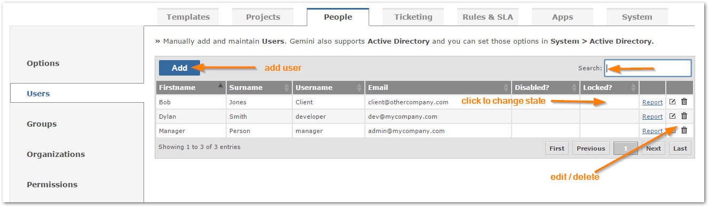
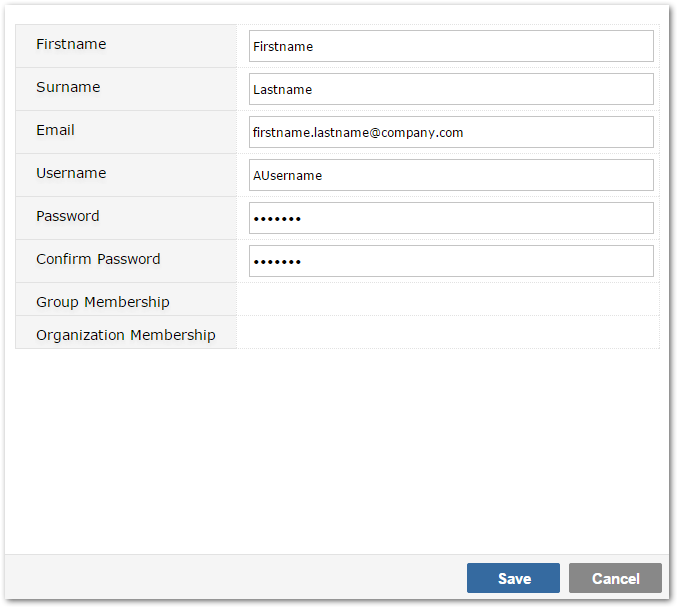

Add, find, delete, edit new users within Gemini.

Adding a new user requires basic information for the new user.

You cannot delete a user record that is associated with data in your Gemini instance and you will receive a warning to that effect if you try to do so. In the event that a user record that is associated with data is no longer required, you must disable the user.
NoteFor information on managing users through Active Directory see Active Directory Groups
You can now view individual user permissions across all projects to see which actions they can perform.
See a list of processes the user can create, edit and view for each project.